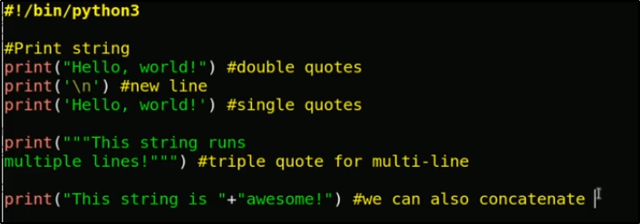

create a new directory python
create new file using gedit or nano or any other editor save this as filename.py
write this foolowing code

to run this we have 3 method
1.python 3 filename.py
2. . /filename.py
3. python 3 filename.py& # run and open code file
output :-